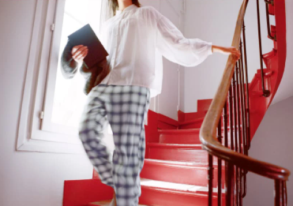
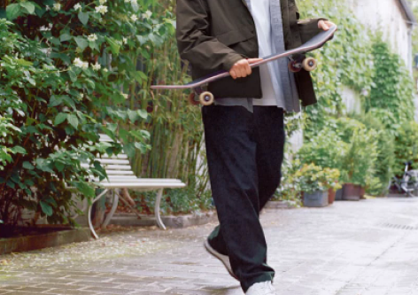
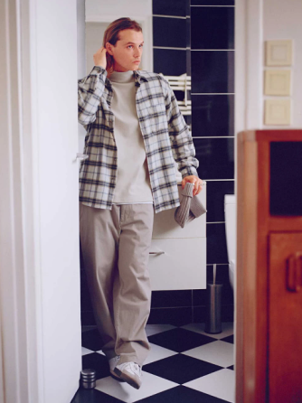
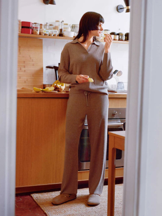

Camille works as a casting director for magazines and commercials. On her days off, she enjoys Paris “in cozy cotton pants” as seen here. Made with pre-washed material, these pants are more flexible. Designed wide at the thigh, the legs taper towards the ankle for a clean silhouette.

The Ins and Out of Easy Wear
This casual style is perfect for relaxing at home or traveling. Let's hear the stories of two Parisians who met while wearing casual clothes that are both relaxed and easy to wear.
The flannel relaxed pants worn by Iris have a straight cut design that allows for freedom and a fashionable plaid print. Camille wears oversize jersey pants that look like trousers. With a cardigan and blouson jacket, the two are ready to change things up and head out the door.




Iris lives in Paris. Every morning, she cuts up some fruit for breakfast. “I love how this outfit makes me feel pampered”, she says, describing this knit pants set. The straight-leg silhouette of the pants and the elastic drawstring at the waist make them perfect for wearing at home or on short trips.

Camille, who loves to skate, loves everyday clothes that match her active lifestyle, especially pants. “Cargo pants are a part of me, they are my favorite style.” Although these pants look like cotton, the material is actually double-stitched jersey that is processed with a special wash. It is a comfortable and easy-to-wear garment.

A simple and versatile Pullover Sweat Hoodie paired with soft and warm wide corduroy. The elasticized waistband makes this jersey bottom perfect for lounging. The refreshing all-white outfit makes every texture of the fabric shine through.

Alongside her modeling work, Iris is also a renowned artist who often exhibits her paintings around Paris. She says this sweater is “like a uniform, very easy to wear.” Crafted from a fine knit-like fiber, the material feels great against the skin. The tapered design at the legs is perfect for all body types.

“The material is soft and smooth. Very easy to wear!” says Iris. The relaxed straight cut of the pants accentuates the drape and smooth silhouette, while the plaid flannel top has a striking print inspired by the color of the pants. It looks chic when layered over a turtleneck.